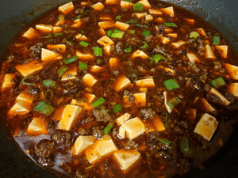

Mapo Tofu Recipe

Mapo Tofu is a traditional Sichuan Cuisine Dish, is consisted of tofu set in a spicy sauce, typically a thin, oily, and bright red suspension, based on douban (fermented broadbean and chili paste) and douchi (fermented black beans), along with minced meat, usually pork or beef.
Ingredients
Marinated Pork
- 450 g (1 lb) ground pork
- 1 tbsp soy sauce
- 1 tbsp Shaoxing cooking wine
- 1 tsp cornstarch
- 1 tsp white pepper powder
Braise
- 2 tbsp spicy doubanjiang (la doubanjiang)
- 1 tsp dou-chi
- 2-3 chopped scallions white and green separated)
- 2-4 minced garlic cloves
- 2 inch minced ginger (similar amount as garlic)
- 400 ml chicken broth or water
- 340 g (1 package) soft tofu cut into 1.5cm (1/2 inch cubes)
- 1 tbsp Sichuan peppercorns crushed
Directions
- Marinade the pork in shaoxing cooking wine, a splash of cooking oil, the soy sauce,
- Add cooking oil to a wok and sear the ground pork until browned, chopping it up as it cooks
- Add the doubanjiang and let it simmer for about a minute
- Add the minced aromatics (ginger, garlic) scallion whites, and dou-chi and cook until fragrant
- Add the stock and a splash of soy sauce, turn up the gas and bring to a boil
- Add the tofu, lower the gas, and braise for around 15 mins
- You’ll know it’s done when the tofu shows their trademark “pockmarks” and the seasoning sticks to them
- Mix in the crushed Sichuan peppercorns and green parts of the scallions right before serving
- Serve over steamed rice
Back to Home